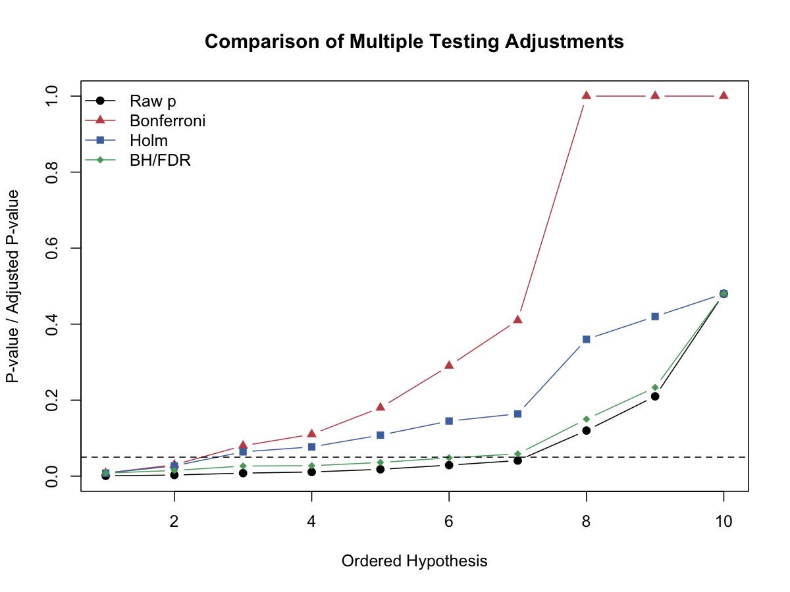

模型评估与解释 · 15·02
Bonferroni校正
Bonferroni Correction
Bonferroni校正（Bonferroni Correction）
§1
方法概览
1.1 定义
Bonferroni 校正是控制 FWER 的最经典单步方法，把显著性水平 $\alpha$ 平均分配到每个检验上。
1.2 它主要解决什么问题
- 研究问题：在做 $m$ 次检验时，如何控制整体至少一次假阳性的风险。
- 适用任务：严格控制 FWER。
- 常见医学场景：高风险结论、不能容忍任何假阳性时的多重比较。
1.3 直觉理解
如果总预算是 $\alpha=0.05$，做 $m$ 次检验时，Bonferroni 就像把这笔“假阳性预算”均分到每一个检验上。
§2
数学形式
2.1 核心公式
若一共进行 $m$ 次检验，则拒绝规则为：
$$ p_j \le \frac{\alpha}{m} $$
等价的调整后 p 值写成：
$$ p_j^* = \min(1, mp_j) $$
2.2 参数或统计量含义
- $m$：检验总数。
- $\alpha$：希望控制的 FWER 水平。
- $p_j^*$：Bonferroni 调整后 p 值。
2.3 关键假设
- 不要求检验独立。
- 目标是控制 FWER，而不是 FDR。
§3
数据形式与输入输出
3.1 适合的数据形式
- 自变量类型：不适用。
- 因变量类型：不适用。
- 数据结构：一列原始 p 值即可。
- 是否适合高维数据：能用，但会非常保守。
- 是否适合缺失较多数据：缺失 p 值需先处理。
- 是否适合删失数据：不适用。
- 是否适合重复测量数据：可用于重复测量后衍生出的多重检验结果。
3.2 示例表格
以一组有序 p 值为例：
| hypothesis | p_raw | p_bonf |
|---|---|---|
| H1 | 0.0008 | 0.0080 |
| H2 | 0.0030 | 0.0300 |
| H3 | 0.0080 | 0.0800 |
| H4 | 0.0110 | 0.1100 |
| H5 | 0.0180 | 0.1800 |
3.3 输入与产出
输入
- 输入数据：一组原始 p 值。
- 关键变量：检验总数 $m$、目标水平 $\alpha$。
- 需要预处理的内容：明确多重检验家族。
产出
- 模型对象/统计结果：校正阈值或调整后 p 值。
- 参数估计：无。
- 预测结果：无。
- 不确定性指标：体现在 FWER 控制目标。
§4
适用场景
- 适合：结论代价很高、需要最严格控制假阳性的场景。
- 不适合：高维探索性研究。
- 使用前需要特别检查的点：是否真的需要 FWER 级别的严格控制。
§5
实现
常用包：
statsmodels
from statsmodels.stats.multitest import multipletests
reject, p_adj, _, _ = multipletests(pvals, alpha=0.05, method="bonferroni")
常用包：
stats
p.adjust(pvals, method = "bonferroni")
§6
结果如何解释
- 核心结果看什么：校正后仍显著的检验有多少。
- 每个主要参数如何解释：若 $p_j^* < 0.05$，表示在 FWER 控制下该结果仍显著。
- 临床或医学意义如何表达：适合用于“宁可漏掉也不愿误报”的场景。
- 常见误读：Bonferroni 不等于“最合理”，它只是“最保守”的经典方法之一。
§7
推荐可视化
- 原始 p 值和 Bonferroni 调整后 p 值对比图。
- 显著性阈值对比图。
7.1 图像示例
下图中的红色折线展示了 Bonferroni 调整后的 p 值，相比原始 p 值抬升最明显。

§8
优势、局限与常见坑
优势
- 简单直接。
- 不依赖独立性假设。
- FWER 控制有明确保证。
局限
- 往往非常保守。
- 检验数多时几乎很难发现信号。
常见坑
- 在探索性高维研究中机械使用。
- 不区分 FWER 和 FDR 的不同目标。
§9
与相近方法的区别
- 和 Holm 的区别：Holm 更灵活、通常更有力。
- 和 BH 的区别：BH 控制 FDR，更适合发现型研究。
§10
医学研究中的典型应用
- 高风险决策下的严格多重比较。
- 小规模多终点研究中的保守校正。
§11
相关方法
§12
参考资料
- Shaffer JP. Multiple hypothesis testing. Annu Rev Psychol. 1995;46:561-584.
- R Core Team.
p.adjust. R Manual. https://stat.ethz.ch/R-manual/R-devel/library/stats/html/p.adjust.html （访问日期：2026-07-02）
— 黑盒词典 · 15·02 —